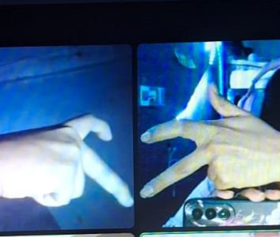
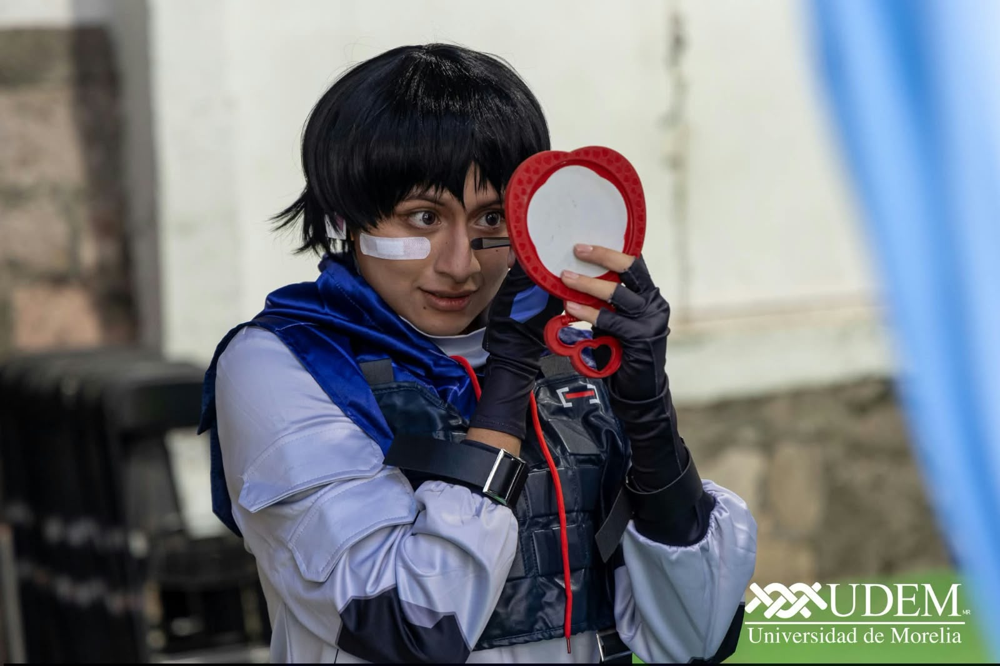
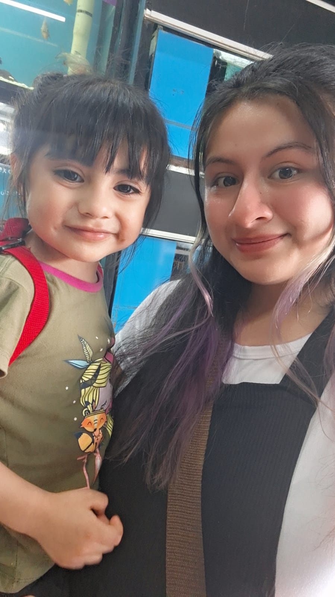
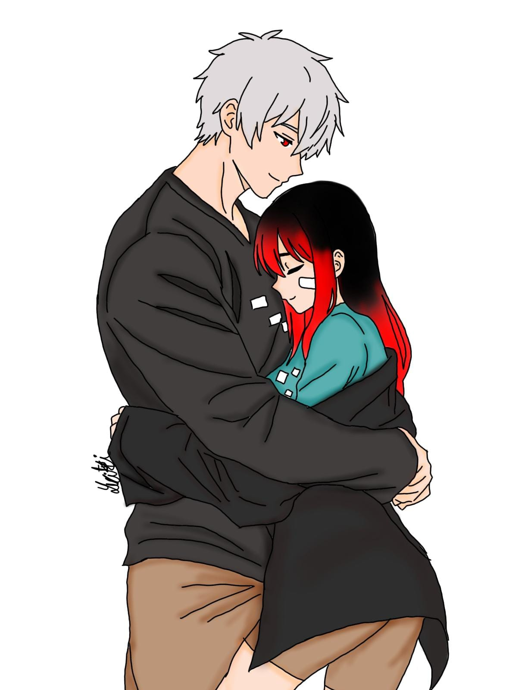
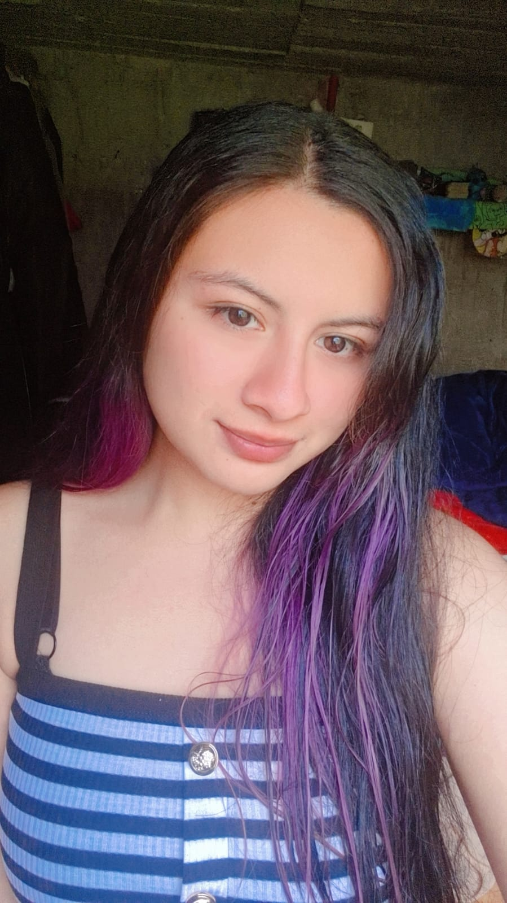
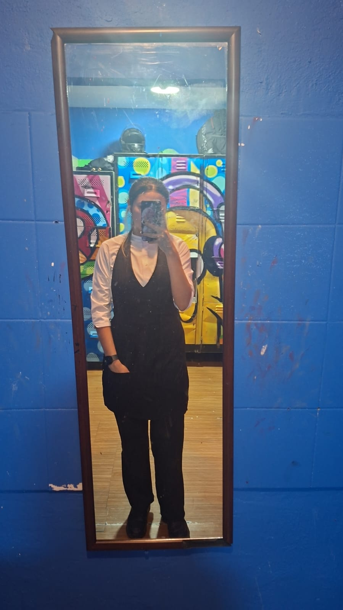
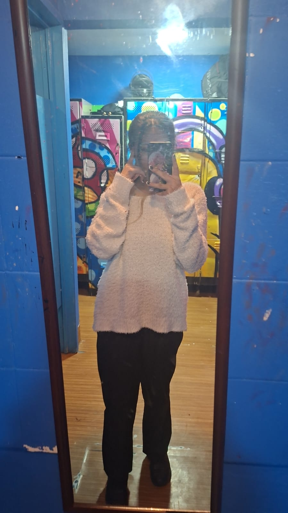

Cuando me pases la foto
images/cover.jpg
Ingresa la contraseña
Pista: nuestro Aniversario
Contraseña incorrecta, intenta de nuevo.

images/cover.jpg
Ingresa la contraseña
Pista: nuestro Aniversario
29 · 08
Mi amor, quiero que sepas algo que quizás ya te he dicho muchas veces, pero siento que nunca está de más decirlo: te amo muchísimo.
Te amo más de lo que a veces sé explicar con palabras y, aunque quizás no siempre sepa demostrarlo de la mejor manera, lo que siento por ti es completamente real.
Sé que las cosas entre nosotros no han estado bien y sé que hemos pasado por momentos difíciles, momentos en los que quizás los dos hemos terminado lastimados, enojados o decepcionados.
Pero a pesar de todo eso, yo sigo aquí, porque no quiero rendirme contigo ni con lo que tenemos. No quiero que todos los momentos bonitos que hemos vivido terminen siendo solamente recuerdos.
Quiero que podamos arreglar las cosas, hablar tranquilos, entendernos y poco a poco volver a sentirnos bien juntos.
Yo no quiero arreglarlo todo solamente porque tenga miedo de perderte. Quiero hacerlo porque realmente te amo y porque para mí nuestra relación importa muchísimo.
Me importas tú, me importa cómo te sientes, me importa lo que piensas y me importa que puedas sentirte tranquila, querida y segura conmigo.

Sé que quizás he cometido errores y sé que no soy perfecto. Hay cosas que pude haber hecho mejor, palabras que pude haber dicho de otra manera y momentos en los que quizás no supe cómo actuar.
Y de verdad quiero aprender de todo eso. No quiero simplemente decirte "perdón" y que después todo siga igual.

Quiero demostrarte con mis acciones que puedo mejorar, que puedo escucharte más, entenderte más y cuidar mucho más nuestra relación.
Quiero que podamos dejar atrás todo aquello que nos hizo daño, no para olvidar lo que pasó, sino para aprender de ello y no volver a cometer los mismos errores.
Quiero que cuando tengamos un problema podamos hablarlo sin lastimarnos, que podamos decirnos lo que sentimos sin miedo y que podamos buscar juntos una solución.
Porque yo todavía quiero muchas cosas contigo. Quiero seguir compartiendo momentos contigo, quiero seguir riéndome contigo, quiero seguir molestándote, cuidándote, apoyándote y estando para ti cuando necesites a alguien.

Quiero esos momentos simples que quizás parecen pequeños, pero que para mí significan muchísimo cuando estoy contigo.
Y sobre todo quiero que sepas que no quiero perderte. No quiero que un mal momento, una discusión o nuestros errores hagan que olvidemos todo lo que sentimos.
Yo todavía veo a esa persona de la que me enamoré y sigo sintiendo muchísimo por ti.

No te estoy diciendo todo esto para presionarte ni para obligarte a que las cosas se solucionen de un día para otro.
Entiendo si necesitas tiempo, entiendo si estás lastimada y entiendo que quizás ahora mismo no sea fácil volver a estar como antes.
Solo quiero que sepas que yo estoy dispuesto a poner de mi parte, a esperar lo necesario y a hacer las cosas bien.
Te amo muchísimo, mi amor. Y si todavía existe una oportunidad para nosotros, yo quiero aprovecharla.
Quiero que podamos reconstruir poco a poco lo que se haya roto, con paciencia, con sinceridad y con mucho amor.

No quiero prometerte que nunca vamos a volver a tener problemas, porque sé que eso sería imposible.
Lo que sí puedo prometerte es que quiero aprender a enfrentar esos problemas contigo y no contra ti.
Quiero que seamos un equipo, que cuando algo esté mal podamos solucionarlo juntos y que nunca olvidemos por qué decidimos estar juntos.
Te amo por todo lo que eres, por tu forma de ser, por los momentos que hemos compartido y por todo lo que haces sentir en mí.
Y aunque ahora las cosas no estén perfectas, mis sentimientos por ti siguen estando ahí.

De verdad quiero arreglarlo todo. Quiero recuperar nuestra tranquilidad, nuestra confianza y esa conexión tan bonita que tenemos.
Quiero volver a verte feliz conmigo y también quiero sentir que los dos podemos estar bien, sin estar constantemente lastimándonos.
Si alguna vez dudas de lo mucho que te amo, quiero que recuerdes esto: yo sigo aquí porque tú me importas muchísimo. Porque te amo. Porque no quiero rendirme.
Porque todavía creo en nosotros y porque, a pesar de todo lo que haya pasado, mi corazón todavía te elige a ti.
Solo espero que algún día podamos mirar atrás y decir que todo esto que estamos pasando no fue el final, sino una etapa que nos enseñó a querernos mejor, a entendernos más y a valorar mucho más lo que tenemos.
Te amo, mi amor. Muchísimo. Y lo único que quiero es que podamos estar bien, que podamos sanar todo lo que nos hemos hecho y que, si los dos queremos, podamos volver a construir nuestra relación poquito a poquito. Yo quiero hacerlo contigo. ❤️